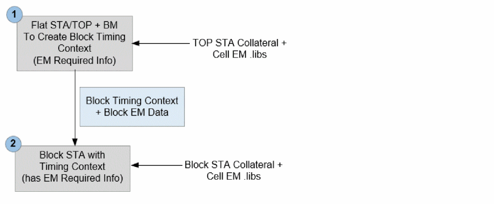
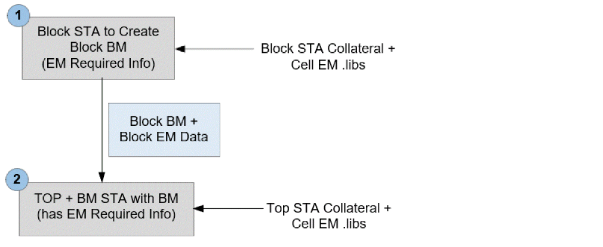

Hierarchical STA - Cell EM
Tempus includes the bottom-up (Boundary Models) and top-down (Context Models) hierarchical timing analysis and closure techniques to overcome the challenges faced by designers during timing and glitch analysis, and closure of large hierarchical designs. The context models for lower level modules are generated from top level analysis to perform accurate block level timing and glitch analysis. Tempus supports Context Analysis for a single as well as multiple instances of blocks.
The Cell EM feature is supported for both context and boundary model-based flows. The context feature preserves the required information for a block to replicate the same EM violation over a block as it does for the top-level. The boundary model directory will be used to preserve information required for EM.
For MIM cases, Tempus will use the worse of all the instances. To enable this, you can use the setting given below:
set_power_analysis_mode -worst_case_vector_activity true
Cell EM Context-Based Flow
The timing analysis and closure with timing context is a two-step flow:
Figure -121 Cell EM Context-Based Flow

STEP1: Timing Context Generation from Top STA
The first step is to create the timing context of lower-level sub-modules from the top-level STA environment. This can either be done from the Top Flat or from Top BM analysis. Once the top-level design is fully loaded and ready to perform timing analysis, you can use the write_timing_context -include_TCF command to create timing context constraints of the required sub-module with EM required database.
write_timing_context command triggers an update_timing -full state. The design state after update_timing -full versus write_timing_context, however, remains the same. So, you can replace update_timing -full with the write_timing_context command in the top-level scripts and continue to generate reports after context creation.read_lib (including Cell em .libs)
read_verilog
set_top_module top
read_spef
read_sdc
write_timing_context context.db -module block -include_TCF
propagate_activity -set_net_freq true
STEP2: Block STA with Timing Context
In this step, the software reads the block design with the context generated from STEP 1.
read_lib
read_verilog
set_top_module block
read_spef
read_sdc
* read_timing_context context.db -tcf_port_type {default:data; data, clock, both}
update_timing
propagate_activity -set_net_freq true
-tcf_port_type parameter utilizes activity information from the top over clock port, data port, or both. You can use the following options:
-
data: Activity from top will be annotated only on data port, clock over block will be utilized internally for calculating activity over clock port. -
clock: Activity from top will be annotated only on clock port. -
both: Both clock and data port will have annotation.
Cell EM Boundary Model Flow
The timing analysis and closure with boundary model is a two-step flow:
Figure -122 Cell EM Boundary Model-Based Flow

STEP1: Boundary Model Generation from Block STA
The first step is to generate a boundary model BM from Block that is required to be plugged in to TOP.
You must run the create_boundary_model -include_TCF command to have a BM model with all the EM information required to be integrated in TOP, as shown below:
read_lib (including Cell em .libs)
read_verilog
set_top_module block
read_spef
read_sdc
create_boundary_model -dir DIR -include_TCF
propagate_activity -set_net_freq true
STEP2: TOP STA with Boundary Model
This step involves integrating the BM generated from Step 1 in TOP Level.
read_lib
read_verilog
set_top_module block
read_spef
read_sdc
* read_boundary_model DIR -module
update_timing
propagate_activity -set_net_freq true
Return to top